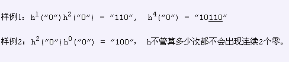

BZPRO
#1141. [POI2009]Slw
内存限制：162 MiB
时间限制：10 Sec
提交
提交记录
讨论
题目描述
定义函数H(s)其中s为一个2进制数，返回s转成字符串以后，把所有的"1"变成"10","0"变成"1",比如H("1001"
)="101110",特殊的H("")="",Hm(s)=H(H(H(...H(s))))...),即自我运算m次,H
0
(s)=s.输入n个数T
1
...T
n
判断H
T
1
("
0")H
T
2
("0")..H
T
n
("0")是否是H
m
("0")的子串，M为任意正整数
输入格式
第一行正整数T(1≤T≤13)表示数据组数.
每组数据包括：
第一行n（1≤n≤100,000）
第二行n个非负整数T1—Tn（每组数据ΣTi不超过10^7）
输出格式
N行，每行一个字符串TAK/NIE表示是/否。
样例
样例输入
2
2
1 2
2
2 0
样例输出
TAK
NIE
数据范围与提示
